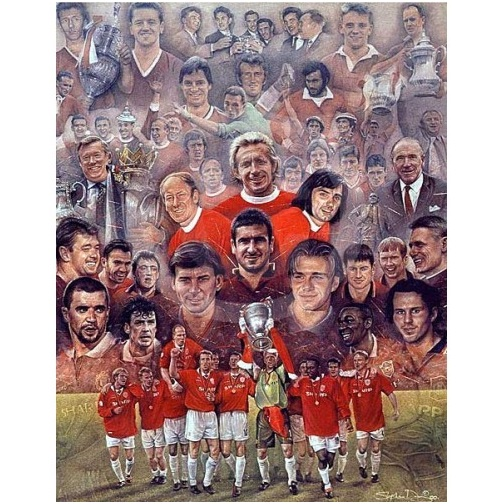

Thay Lời Kết

ách này hoàn thành vào cuối năm 2014, nhưng chúng tôi chọn thời điểm Sir Alex Ferguson nói lời chia tay để kết thúc. Sir Alex muốn ra đi với tư cách người chiến thắng, cho rằng như thế là đẹp nhất. Chúng tôi cũng cùng ý ấy, nên dừng bút vào ngày Sir giã từ. Những diễn biến tại Old Trafford dưới thời David Moyes và Louis Van Gaal còn quá mới, ai cũng biết và còn nhớ như in, nhắc lại cũng bằng thừa. Vả lại, viết lịch sử bao giờ cũng cần một độ lùi nhất định, để có thêm thời gian thu thập thông tin từ nhiều nguồn, nhiều phía, và để chính người viết có thời gian để bình tâm, sau đó mới có thể phân tích, đánh giá mọi việc một cách khách quan, công bình và toàn diện.
David Moyes đáng thương hay đáng trách? Bất tài hay bất phùng thời? BLĐ United liệu có sai khi không tin tưởng Ryan Giggs, chỉ dùng anh vài trận trong vai HLV tạm quyền? Louis Van Gaal có khá gì hơn Moyes? Việc Van Gaal mua cầu thủ vung vít từ khắp nơi có làm mất bản sắc Quỷ Đỏ? Tại sao nhà Glazer lại mở hầu bao cho nhà cầm quân người Hà Lan tiêu xài thả ga?
Đừng vội tìm lời đáp cho những câu hỏi trên. Hãy cứ ghi nhận thông tin mà đừng phán xét. Một, hai năm trôi qua, nhận định của bạn có thể sẽ rất khác so với hiện tại.
Trong cuốn Sir Alex Ferguson – Chân Dung Một Huyền Thoại, chúng tôi từng lạc quan về một ngày mai tươi sáng cho United trong thập niên 2010, với điều kiện Ferguson ở lại thêm ít nhất vài năm. Nay vị thầy lão luyện đã vui thú điền viên, trong khi lực lượng CLB chưa hoàn thiện, khiến tương laitrở nên bất định, vô cùng khó đoán. Quỷ Đỏ gặp khó khăn trong việc thay thế Sir Alex là điều đương nhiên, bởi nếu không thế, Sir đã không vĩ đại. Nghiêm trọng hơn nữa, nếu như lịch sử thời kỳ hậu-Matt Busby lặp lại, những khó khăn có thể kéo dài.
Nhưng khi bạn thật sự yêu một người, bạn yêu người ấy khi nghèo hèn cũng như khi giàu sang, khi gian khó cũng như khi vinh quang. Trên đời, thịnh suy là lẽ thường hằng, có thái tất phải có bĩ, quan trọng là một lòng giữ vững niềm tin. Đọc lịch sử United, bạn đã thấy đội từng trài qua những thời khắc vô cùng tối tăm, song lúc nào cũng biết vượt lên, san bằng trở ngại để trở lại đỉnh cao. Ngay trong giai đoạn gian khó nhất, lúc tất cả đã hóa tàn tro sau thảm họa 1958, từ tàn tro vẫn tái sinh được phượng hoàng, thì không lý do gì ta lại mất niềm tin ở thời điểm hiện tại.
“Phong độ là nhất thời, đẳng cấp là mãi mãi”.
Câu nói trên đã trở nên sáo ngữ, nhưng không vì thế mà mất đi giá trị!

Manchester United Greats – Tranh Của Stephen Doig (Ảnh: Unionart.co.uk)
Thư Mục Tham Khảo
- Brown, J 2012, The Matt Busby Chronicles: Manchester United 1946-1969, Desert Island Books.
- Crick, M 2003: The Boss – The Many Sides of Alex Ferguson, Pocket Books.
- Ferguson, A & McIlvanney, H 2000, ManagingMy Life – My Autobiography, Hodder & Stoughton.
- Ferguson, A & Hayward, P 2013, Alex Ferguson: My Autobiography, Hodder & Stoughton.
- Ferris, K 2004, Manchester United in Europe: Tragedy, History, Destiny, Mainstream Publishing.
- McCartney, I 2013, Manchester United 1958-1968: Rising from the Wreckage, Amberley Publishing.
- McCartney, I & Clare, T, 2013, The United Tour of Manchester, Amberley Publishing.
- Meek, D & Tyrrell, T 2011, Sir Alex Ferguson: The Official Manchester United Story of 25 Years at the Top, Simon & Schuster.
- Metcalf, M 2014, 1907-1911 Manchester United: The First Halcyon Years, Amberley Publishing.
- Nguyễn Minh 2012, Sir Alex Ferguson: Chân Dung Một Huyền Thoại, Ebook: VmgMedia.
- Nguyễn Minh 2013, Sao Của Ngàn Sao: Cuộc Đời Và Sự Nghiệp David Beckham, Ebook: VmgMedia
- Taylor, D 2008, This is the One: Sir Alex Ferguson, The Uncut Story of a Football Genius, Gardners Books.
- White, J 2010, Manchester United the Biography: The Complete Story of the World’s Greatest Football Club, Little Brown Book Group.
- Tư liệu trên các trang mạng Internet, đặc biệt từ www.stretfordend.co.uk.
- Tư liệu từ các bài viết cũ của cùng tác giả.
(Ảnh bìa: Paul Thomas/Bloomberg.com)